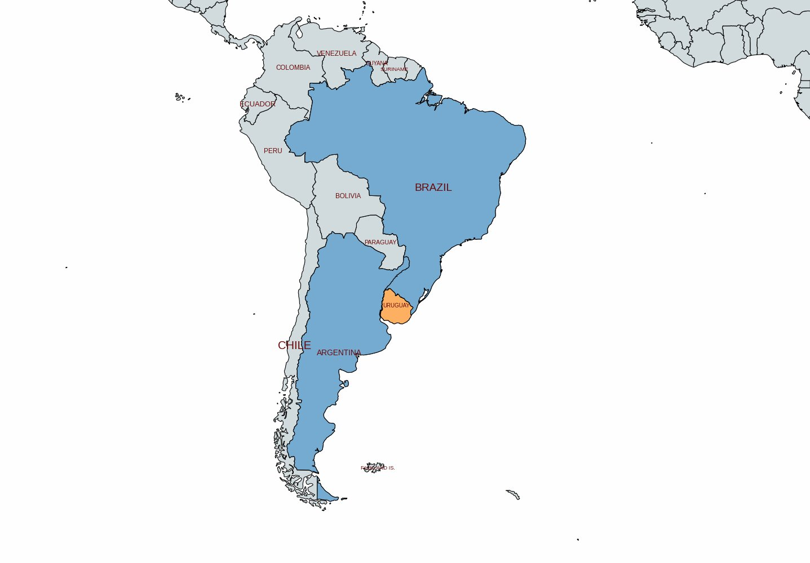
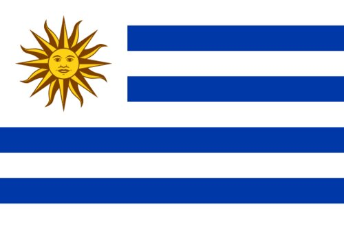
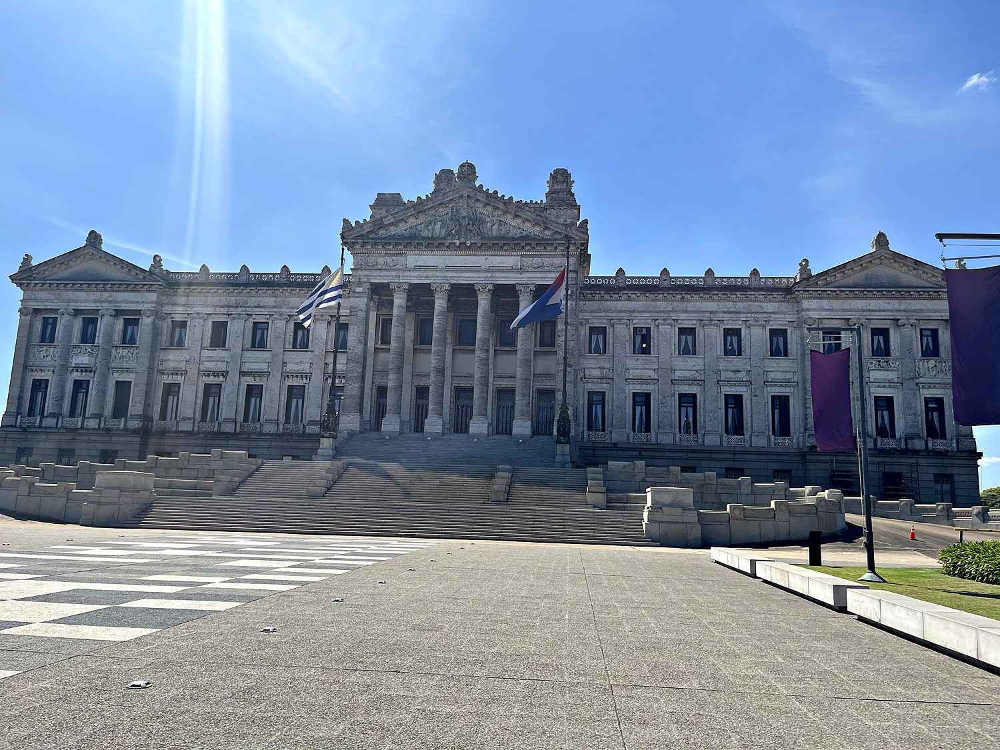
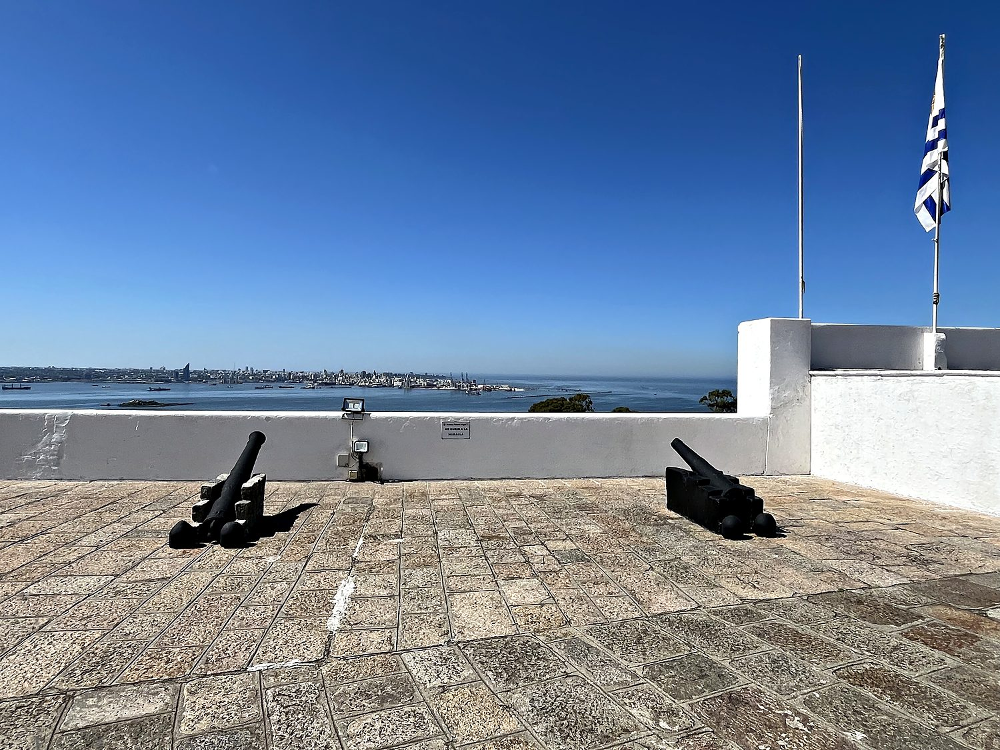
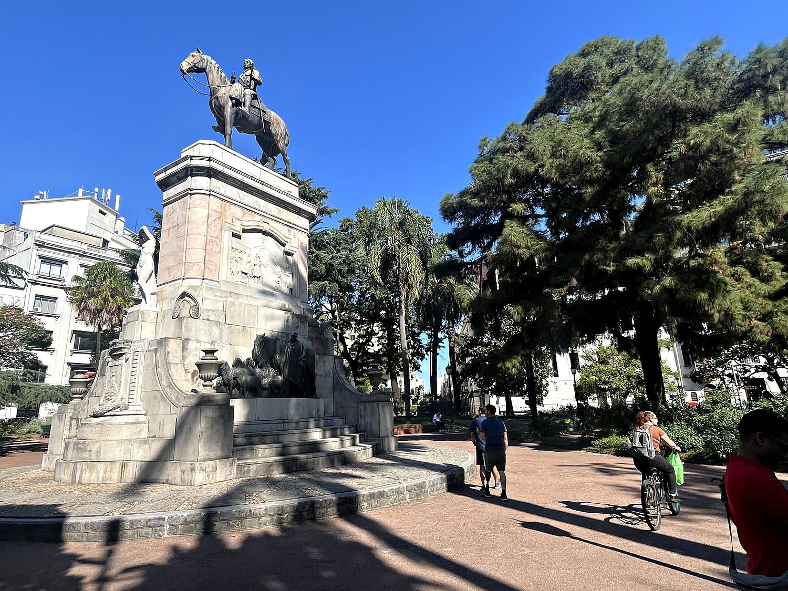

I visited Montevideo in March 2025, and the Uruguayan capital immediately struck me as Europe transplanted to the tropics. It boasts grand 19th century facades and leafy plazas, but with palm trees, a warm Atlantic haze, and a pace so relaxed it borders on horizontal. I threw myself into an ambitious walking tour of essentially the entire city in a single day, a plan complicated by the fact that I had arrived without a working belt and found every shop resolutely closed until mid-morning. For several hours, therefore, the dignity of Uruguay's most historic streets was preserved against my sliding trousers by a sweater knotted around my waist – a look I prefer to believe read as “European intellectual” rather than “man who forgot a belt.” Eventually re-belted and restored to respectability, I set off to get properly acquainted with one of South America's quietest and most quietly remarkable little countries.
Montevideo was founded by the Spanish in 1724, not as a grand colonial capital but as a military strongpoint to stop the Portuguese in neighboring Brazil from creeping any further south. A modest origin for a city that now holds nearly half the country's population. Its heart is the Plaza Independencia, pictured above, where the palm-lined square is presided over by the Palacio Salvo, a wonderfully eccentric Art Deco tower that was, on its completion in 1928, the tallest building in South America. Beneath the square lies the mausoleum of José Gervasio Artigas, the revered father of Uruguayan independence, and from there the old town unspools westward in a grid of pedestrian streets, the pleasant Rambla waterfront, and a genuinely surprising quantity of graffiti. Most of it, I regret to report, was of the scrawled rather than the artful variety.

Uruguay exists in large part because two bigger neighbors could not agree on who should have it. For centuries this stretch of coast was a contested borderland between the Spanish and Portuguese empires, and later between newly independent Argentina and Brazil. It was even briefly seized by the British, who captured Montevideo in 1807 before being driven out. In 1828, exhausted by war and nudged along by British diplomacy, the two regional giants agreed to carve out a small independent buffer state between them, and Uruguay was born. Its national hero, Artigas, had championed independence and a federal union only to die in Paraguayan exile, never seeing the country he is now credited with fathering. Far less celebrated is the fate of the Charrúa, the region's Indigenous people, who were all but exterminated in an 1831 massacre. This dark founding chapter is one that modern Uruguay has only recently begun to reckon with.

What Uruguay did next set it apart from almost every country around it. In the early 20th century, under the reformist president José Batlle y Ordóñez, it built one of the world's first welfare states. This included free education, the eight-hour workday, pensions, and a separation of church and state so thorough that even Christmas was officially rebranded the “Day of the Family.” This earned it the nickname “the Switzerland of South America,” and while the 20th century brought its own dictatorship and turmoil, Uruguay has re-emerged as one of the region's most stable, secular, and socially progressive nations. It was the first country in the world to fully legalize cannabis, and an early adopter of same-sex marriage. It is also, per capita, the planet's most devoted consumer of mate, the bitter herbal tea that Uruguayans carry everywhere in a permanent, thermos-toting embrace.
The grandest expression of that stable democracy is the Palacio Legislativo, Uruguay's parliament, an enormous neoclassical pile completed in 1925 and clad in some twenty varieties of Uruguayan marble. For a country of only around 3.5 million people, the sheer scale and confidence of the building is striking. It feels like a marble monument to the notion that a small nation could take the business of governing itself very seriously indeed. It looked all the more imposing rising above the empty plaza in the midday heat, a temple to a democracy that, for all its ups and downs, Uruguayans have guarded more carefully than most of their neighbors.

Across the bay, on the hill that gives Montevideo its name – legend has it a Portuguese lookout cried “Monte vide eu!” (“I see a hill!”) – stands the Fortaleza del Cerro. This early 19th century fortress now houses a military museum, its ramparts still bristling with cannons aimed out over the harbor. Standing among those guns, looking back across the water at the city, I was reminded that this pleasant, easygoing capital was for a long time anything but peaceful: a prize fought over by Spain, Portugal, Britain, Argentina, and Brazil in turn. That Uruguay emerged from all that grabbing as one of the continent's calmest countries feels like a small historical miracle.

I ended at the Monumento al Gaucho, a bronze horseman honoring the figure at the mythic center of Uruguayan identity. The gaucho (the nomadic cowboy of the vast grassy plains that cover most of the country) is to Uruguay and Argentina what the cowboy is to the American West: a symbol of freedom, toughness, and a rural life built on cattle, horses, and endless open pampas. It made a fitting note to end on. For all its European facades and Art Deco towers, Uruguay's soul still lives out on the grasslands: in the herds of cattle that outnumber its people several times over, and in the mate gourd that never quite leaves its hand.
